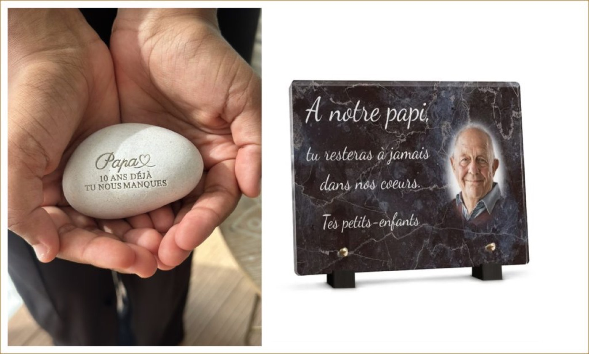

Lorsqu’on souhaite rendre hommage à un proche disparu, le choix de l’objet funéraire est très personnel. Galet funéraire ou plaque funéraire : lequel choisir ?
Les deux permettent de conserver un message, un prénom, une date ou un symbole, mais leur style et leur présence sont différents.

Le galet funéraire : naturel et discret
Le galet funéraire séduit par son aspect naturel, doux et contemporain.
Sa forme irrégulière et sa matière minérale lui donnent un caractère unique. Il peut être personnalisé avec quelques mots, une phrase, un prénom, une date ou un motif.
C’est un choix particulièrement adapté si vous recherchez un hommage intime et élégant, sans le côté très traditionnel d’une plaque funéraire.
Chez L’Atelier Inspire, les galets sont gravés artisanalement et proposés dans différentes pierres naturelles.
La plaque funéraire : classique et visible
La plaque funéraire reste un choix traditionnel. Elle offre généralement davantage de surface pour inscrire un texte, ajouter une photographie, des dates ou plusieurs éléments personnalisés.
Elle convient particulièrement lorsque l’on souhaite un hommage plus visible et plus classique.
Et la résistance ?
Pour un objet destiné à rester dehors, le choix du matériau est essentiel. Une pierre naturelle adaptée à l’extérieur offre une excellente durabilité face aux saisons. L’entretien reste généralement simple : un nettoyage doux suffit pour retirer les poussières et salissures.
Finalement, choisissez ce qui ressemble à la personne
Il n’y a pas de meilleur choix.
Une plaque peut être parfaite pour un hommage traditionnel. Un galet peut davantage correspondre à quelqu’un qui aimait la nature, la simplicité ou les choses authentiques.
Parfois, quelques mots gravés dans une belle pierre suffisent.
Un prénom. Une date. Une phrase. Un souvenir.